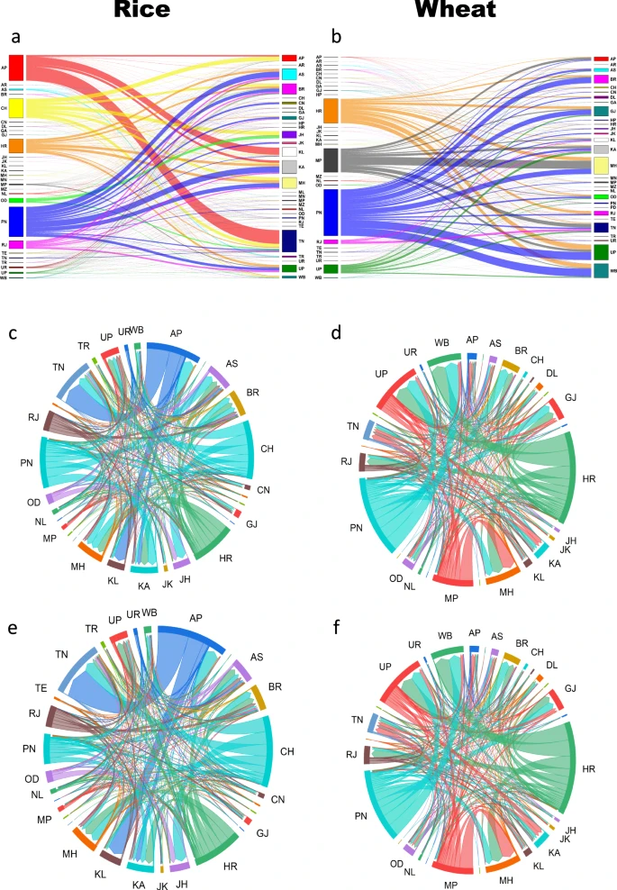
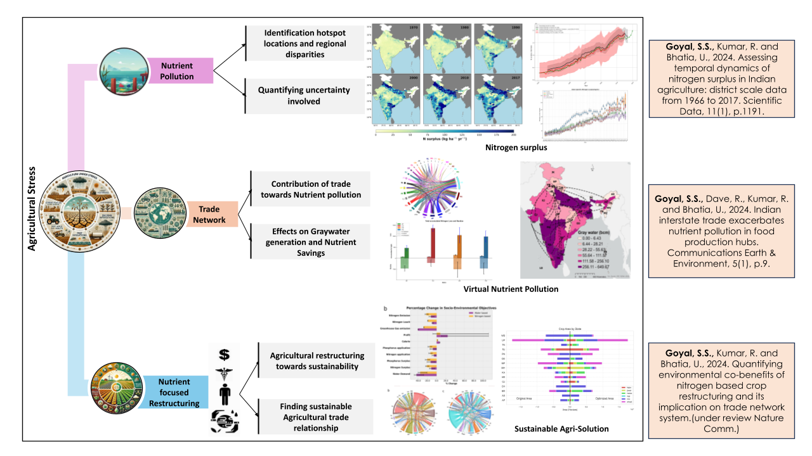

UNLOCK · AI Sustainability Benchmarking
Helmholtz Benchmark Project developing AI-ready environmental sustainability benchmarking datasets from Helmholtz data assets.
€108,508
Research portfolio
Current work spans AI sustainability benchmarking, multi-pollutant water quality, stream-temperature dynamics, agricultural nutrient management and trade-linked environmental risks.
Acquired funding & leadership
Helmholtz Benchmark Project developing AI-ready environmental sustainability benchmarking datasets from Helmholtz data assets.
Co-supervision of a PhD project on multi-pollutant, spatially explicit water-quality modelling from historical evolution to future scenario assessment.
Co-supervision of a PhD project on multi-pollutant, spatially explicit water-quality modelling across the Nile basin.
Research scientist contributions
Stream-temperature dynamics and hydrologic forecasting across Germany to support climate-adaptation assessment.
Satellite-informed modelling approaches to predict river-temperature dynamics and assess implications for aquatic ecosystems in Germany.
Assessment of agricultural practices and nutrient fluxes in the Narmada Basin for sustainable farming and water-quality management.
Grant development
Selected competitive research proposals developed and submitted for external research funding.
Research proposal submitted within the DFG Priority Programme Agri-Food Chains in Times of Multiple Crises, focusing on the resilience and sustainability of interconnected agricultural production, trade and food-supply networks under multiple and compound disruptions.
Research proposal submitted to the Deutsche Bundesstiftung Umwelt (DBU), focusing on high-resolution characterization of agricultural landscape architecture and its links to biodiversity and sustainable land management in Germany.
PhD research arc
Three connected studies developed during my PhD, preserved with the original research figures from the previous website.
Project 01 · Scientific Data
Annual district-level agricultural nitrogen budgets from 1966 to 2017 provide a long-term basis for diagnosing spatial change, uncertainty and nitrogen-use performance across Indian croplands.

Project 02 · Communications Earth & Environment
This work traces nitrogen and phosphorus surpluses embedded in interstate crop flows, showing how agricultural trade can relocate environmental burdens toward major food-production hubs.

Project 03 · Nature Communications
This study evaluates agricultural restructuring pathways that jointly account for nutrients, water, greenhouse gases, economics and interstate trade while maintaining food-production constraints.

Research synthesis
